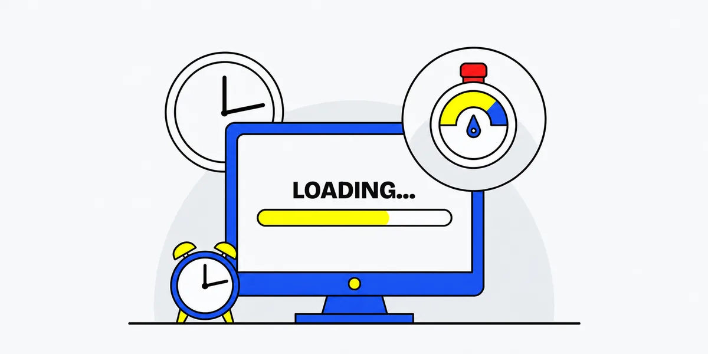
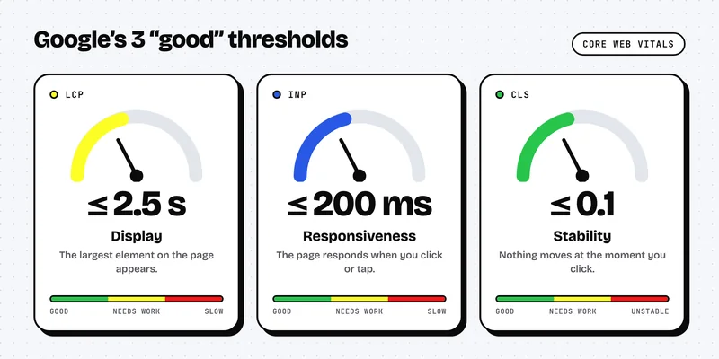

Why speed matters for your business
A fast site reassures. It gives a professional image, especially to a customer discovering your company. Conversely, a site that drags suggests a company that is not well looked after.
Speed also influences your visibility. Google measures real visitor experience with the “Core Web Vitals”, a set of metrics. They are among the signals used for ranking, alongside many others such as content quality. In other words: speed does not replace good content, but it prevents spoiling its effect.
The three metrics to know
No need to panic, they are simpler than they look:
- LCP (Largest Contentful Paint): how long the largest element of the page takes to appear, often an image or a title. “Good” threshold: 2.5 seconds or less.
- INP (Interaction to Next Paint): responsiveness when you click or tap the screen. “Good” threshold: 200 milliseconds or less.
- CLS (Cumulative Layout Shift): visual stability. Have you ever clicked a button that moved at the last moment? That is what CLS measures. “Good” threshold: 0.1 or less.
These thresholds are assessed on data from real visitors: a page is rated “good” when 75% of its visits meet the threshold (criteria published by Google).

Step 1: measure before changing anything
No need to guess. Two free tools are enough:
- PageSpeed Insights (Google): enter the address of your page and read the mobile results.
- Google Search Console: the “Experience” report flags problem pages across the whole site.
Always test the mobile version first. In French-speaking Switzerland, a large share of local searches is done from a phone, often on a variable connection.
Step 2: lighten your images
This is the most common cause of slowness. A photo taken with a smartphone and uploaded as is can be very heavy. Remember three rules:
- resize the image to the size actually displayed;
- use a modern format such as WebP;
- load images lazily (“lazy loading”) when they are further down the page.
Example: a restaurant in the Pâquis district of Geneva showing its menu and twelve photos of dishes will often save a lot of time just by processing its images.
Step 3: clean up plugins and scripts
Live chat, advertising pixels, carousels, fonts of every kind: each addition weighs the page down. Ask yourself for each one: “Does it bring me customers?” If the answer is no, remove it. On WordPress, unused plugins are a classic.
Step 4: choose suitable hosting
Cheap hosting shared with hundreds of sites can slow your server at peak times. For a Swiss audience, prefer a server located in Switzerland or Europe, with a caching system. This reduces response time and also makes data compliance easier.
Step 5: stabilise the layout
To avoid elements jumping around, always specify the width and height of images, reserve space for banners (cookies, ads) and limit the number of fonts. Your CLS will improve immediately.
Conclusion: let’s talk about your site
A fast site means fewer visitors leaving and more enquiries for your business. At Websituation, we design sites built for performance from the start, with long-term follow-up.
Book a free meeting, or discover our subscription plans.
FAQ
Is my website too slow?
Test it with PageSpeed Insights on mobile. If the LCP exceeds 2.5 seconds, there is room for improvement.
Do I need to rebuild my whole site?
Not necessarily. Often, optimising images and removing unnecessary scripts is enough. A redesign makes sense if the technical base is too old.
Is speed enough to rank well on Google?
No. Content, local relevance and trustworthiness remain essential. Speed is one lever among others, but it also improves your conversions.


A website or visibility project?
A free first call to look at your needs and your budget.
Book a call